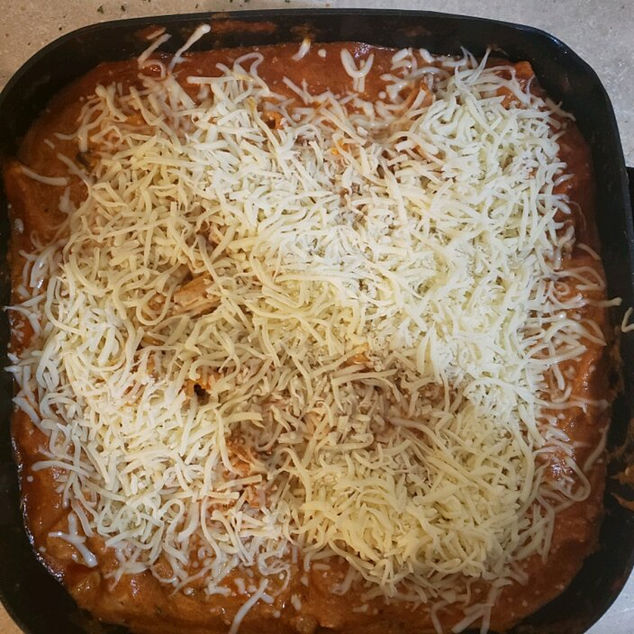

Lasagna

Description
Lasagna with sausage, mushrooms, and lots of cheese is fast and easy on the stove top--and there's no compromise on flavor.
Ingredients
- 1 tbsp olive oil
- 1 medium onion, diced
- 1 pound hot Italian sausage
- 1 medium red bell pepper, diced
- 1 jar RAGU Traditional Sauce
- 1 package no-boil lasagna sheets, broken into large pieces
- 1 cup water
- 1/2 tsp crushed dried rosemary
- 8 oz ricotta cheese
- 8 oz mozzarella cheese, shredded
- 2 tbsp minced fresh parsley
Steps
- Heat a large skillet over medium high heat and add olive oil. Swirl to coat. Add the onion and saute until translucent, about 5 minutes. Add the sausage, red pepper, and mushrooms; saute until meat is cooked through, about 5 minutes.
- Stir in the Ragu® Old World Style® Traditional sauce, broken lasagna noodles, water, and rosemary. Cover and turn heat down to medium-low.
- Cook for 20 minutes, stirring occasionally, until the pasta is al dente. Remove the lid and add the ricotta, 2/3 of the cheese, and parsley; stir to combine. Top with remaining mozzarella and serve immediately.